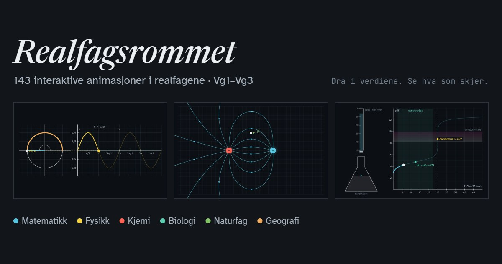

Euler, Euler-Cromer og RK4
Tre numeriske metoder regner ut den samme bevegelsen steg for steg. Med Eulers metode vokser energien, med Euler-Cromer holder den seg nesten fast, og RK4 treffer nesten helt. Sammenlign dem på en fjær og en planetbane.
Start animasjonen
Formler
Om animasjonen
Alle tre metodene starter med samme posisjon og fart og bruker samme tidssteg . Den stiplede kurven og de stiplede omrissene viser den nøyaktige løsningen.
Eulers metode bruker farten og akselerasjonen fra starten av hvert steg. I en svingning havner den litt for langt ut hver gang, så energien vokser for hvert steg. Svingningen og planetbanen blir større og større.
Euler-Cromer er nesten det samme programmet. Den eneste forskjellen er at farten oppdateres først, og at den nye farten brukes når posisjonen flyttes. Da vokser ikke energien, den bare vipper litt opp og ned. Derfor er metoden mye brukt i fysikkprogrammer.
RK4 (Runge-Kutta av fjerde orden) regner ut akselerasjonen fire ganger per steg og tar et veid snitt av dem. Hvert steg krever mer regning, men feilen blir svært liten. Halverer du tidssteget, blir feilen omtrent 16 ganger mindre.
Den nederste grafen viser hvor mange prosent energien har endret seg siden starten. Energien skal være bevart, så avviket viser hvor god metoden er. Fjæra har kg og N/m, så svingetiden er 1 s. I planetbanen er AE³/år², og planeten starter 1 AE fra sola.
Prøv dette
- Se på fjæra med s. Hvor stort er energiavviket for hver av metodene etter 10 s?
- Halver tidssteget. Hvor mange ganger mindre blir avviket for hver metode?
- Velg planetbanen og vis bare Euler-Cromer. Banen lukker seg nesten, men dreier litt for hver runde. Hva skjer med dreiningen når du gjør tidssteget mindre?
- RK4 regner ut kraften fire ganger per steg. Sammenlign RK4 med s og Euler-Cromer med s. Da gjør de like mye regning. Hvilken er best?
Kompetansemål
- Fysikk 1: Numeriske metoder og programmering når akselerasjonen ikke er konstant
- Fysikk 2: Numeriske metoder og modellering